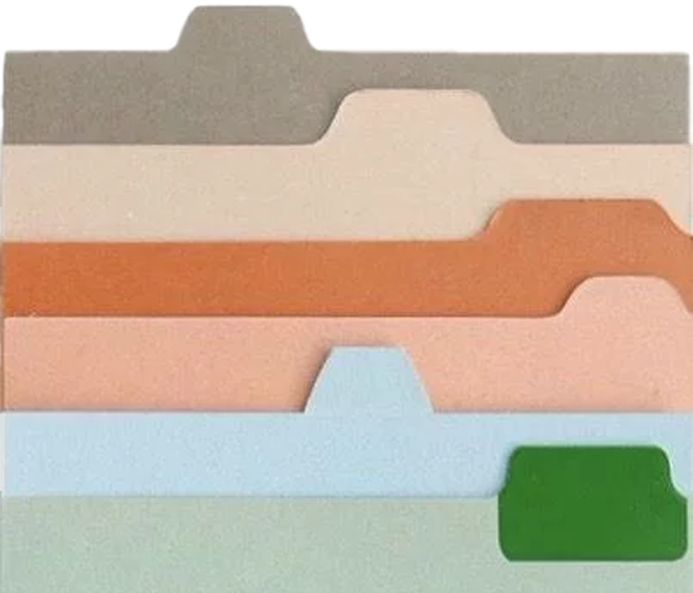

Strategy
Target : 트렌드와 밈에 민감한 18~24 여성 중심 MZ 타겟
Content Strategy : 개인의 취향과 관심사를 매거진형 큐레이션 형태로 풀어내는 콘텐츠
Format : 카드형 콘텐츠 + 릴스 중심 영상 콘텐츠 썸네일 중심 시각 설계
매거진형 콘텐츠 기획 및 운영을 통해 인스타그램 채널 성장
패션/라이프스타일 콘텐츠 시장에서 유사한 계정이 많아 차별화된 포맷이 필요했습니다.
매거진형 콘텐츠 구조를 기반으로 MZ 타겟에게 맞는 콘텐츠 전략을 수립하고, 채널 성장 및 반응 개선을 목표로 설정했습니다.
Target : 트렌드와 밈에 민감한 18~24 여성 중심 MZ 타겟
Content Strategy : 개인의 취향과 관심사를 매거진형 큐레이션 형태로 풀어내는 콘텐츠
Format : 카드형 콘텐츠 + 릴스 중심 영상 콘텐츠 썸네일 중심 시각 설계
콘텐츠 기획 및 제작: 트렌드 기반 주제 선정 및 콘텐츠 기획
디자인: 포토샵과 미리캔버스를 활용한 카드뉴스 및 썸네일 제작
운영: 게시물 업로드, 캡션 작성 및 팔로워 소통
Feed Operation Archive

Reels Operation Archive